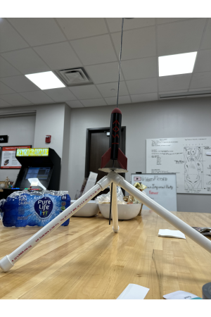

Custom Model Rockets
Motivation
As a child, I used to love to play with model rockets. I have many fond memories of building and launching model rockets with my father and brother. As I grew older, I never lost my interest in rocketry and wished to one day make my own. Now as an engineer I can make this wish a reality and make a series of these rockets that increase with complexity and efficiency as I learn more about model rocketry.
Challenge
Making a model rocket with affordable materials.
Solution
With access to the 3D printers at the makerspace, I decided to make a 3D printed rocket and custom build a launch pad.
Approach
I used Autodesk Inventor, which I had learned in high school, to 3D model my own rocket. There were two parts to my design: a nose cone and a body with three fins and two lugs for a guide rail. As all great designs must have a name, I decided to name my rocket Eos after the greek goddess of the dawn.
I bought some D-12 rocket engines from Estes to power the rocket. Although this current model doesn't include a parachute, as I wish to see the full extent of the power of my rocket, I hope to later make my own custom recovery method. Now that the rocket was assembled, I needed to build a launch pad. Using PVC pipe, a metal disk for a deflector plate, and a metal rod for the guide rail, I was able to make a sturdy launch pad with items found at the hardware store. Now I had a homemade version of the rockets I used to play with as a kid.
| Skills Demonstrated | Project Artifacts |
|---|---|
| 3D Modeling - Autodesk Inventor | n/a |
Benefits
This design is cheap but more importantly it is easy to fabricate and reproduce. This will allow for future iterations to be adapted quickly.
